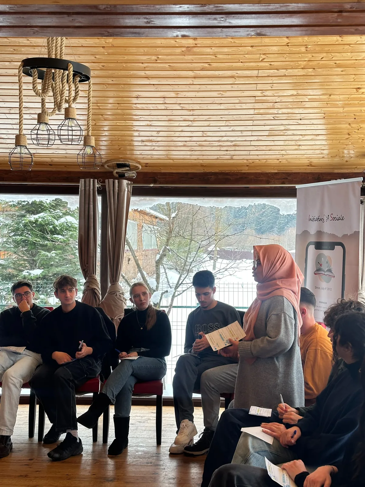
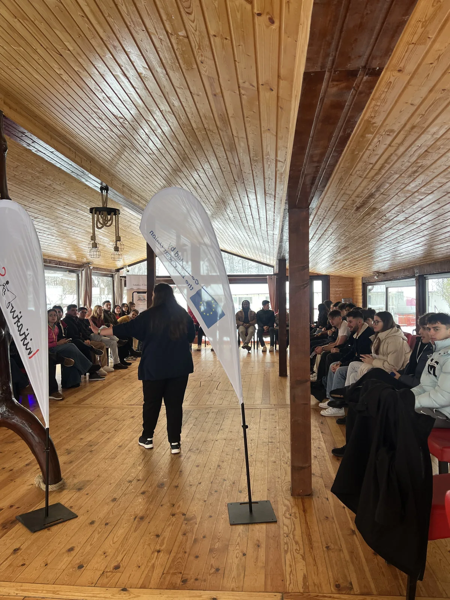

NEWÎn desfășurare
BOOST · personal branding, comunicare și identitate digitală
BOOST: Your Own Story
Povestea ta, competențele tale
Cum își pot valorifica tinerii competențele într-o lume dominată de tehnologie?



NOI 2026BOOST
Descriere
Într-o perioadă în care inteligența artificială și digitalizarea transformă piața muncii, capacitatea de a-ți identifica, comunica și promova competențele devine tot mai importantă.
Pornind de la această realitate, „BOOST: Your Own Story” urmărește creșterea angajabilității tinerilor, prin dezvoltarea competențelor de personal branding, storytelling, comunicare profesională, creare de conținut digital și utilizare responsabilă a inteligenței artificiale.
- Perioada
- 26 noiembrie – 6 decembrie 2026
- Loc
- Pensiunea Siady, Argestru, Vatra Dornei
- Tematică
- Personal branding, comunicare și angajabilitate
- Cadru
- Acreditarea Erasmus+ AIS
- Etapă
- Anul 4
- Program
- BOOST
5Fotografii
Fotografii · BOOST: Your Own Story
NOI 2026Din fișa proiectului
Your Skills. Your Identity. Your Future. Your Story.
persoane
țări
tineri participanți
lideri de grup
Știi ce știi să faci. Dar știi și cum să le arăți și altora? De pe 26 noiembrie până pe 6 decembrie 2026 suntem la Pensiunea Siady din Argestru, lângă Vatra Dornei, cu schimbul de tineri „BOOST: Your Own Story”, iar povestea abia a început.
Suntem 47 de oameni din șase țări (România, Polonia, Ungaria, Italia, Portugalia și Turcia): 37 de tineri între 18 și 30 de ani, 8 lideri de grup și 2 facilitatori. Participanții au sosit pe 26 noiembrie, iar activitățile au început vineri, 27 noiembrie.
Inteligența artificială și digitalizarea schimbă piața muncii, așa că nu mai e suficient să ai competențe. Trebuie să știi să le descoperi, să le pui în cuvinte și să le promovezi.
BOOST: Your Own Story îi ajută pe tineri să devină mai ușor de angajat, prin personal branding, storytelling, comunicare profesională, creare de conținut digital și folosirea responsabilă a inteligenței artificiale.
Prin workshopuri interactive, simulări, exerciții practice și activități în echipe internaționale. Participanții învață să își găsească punctele forte, să își construiască o identitate profesională autentică și să aibă grijă de amprenta lor digitală.
- Materiale proprii de autoprezentare și promovare profesională.
- Mai multă încredere în comunicare și storytelling.
- Instrumente AI folosite pentru dezvoltarea carierei.
- Un plan personal de acțiune pentru ce urmează.
Pe deasupra: încredere în sine, creativitate și gândire critică. Și, ca de fiecare dată, incluziune, diversitate, colaborare interculturală și locuri pentru tinerii cu oportunități reduse.
BOOST: Your Own Story este a noua mobilitate (A9) din acreditarea Erasmus+ AIS în domeniul tineretului. După InnoVenture (Anul 1), NextGEN (Anul 2) și LevelUP (Anul 3), al patrulea an poartă numele BOOST și e dedicat competențelor viitorului și schimbărilor aduse de tehnologie.
Vine după BOOST: Your Future Skills (A8), din septembrie 2026, despre inteligență artificială, creativitate, gândire critică și competențele cerute pe piața muncii. Pe scurt: A8 a adus competențele noi, iar A9 îi învață pe tineri cum să le transforme în oportunități reale.
Fiecare zi se încheie cu reflecție și evaluare, iar competențele câștigate sunt recunoscute prin Youthpass. Acasă, participanții vor organiza activități în comunitățile și școlile lor, ca să ducă rezultatele mai departe și să le arate și altora ce oportunități oferă Erasmus+.
Ne vedem aici cu fotografii și povești pe măsură ce proiectul merge mai departe.
The story continues! Together we are stronger!
2Linkuri utile